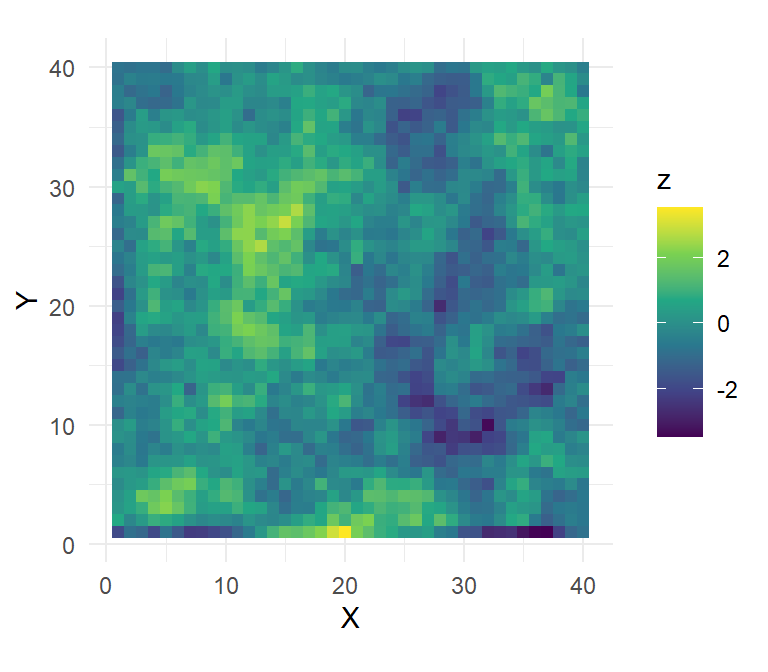
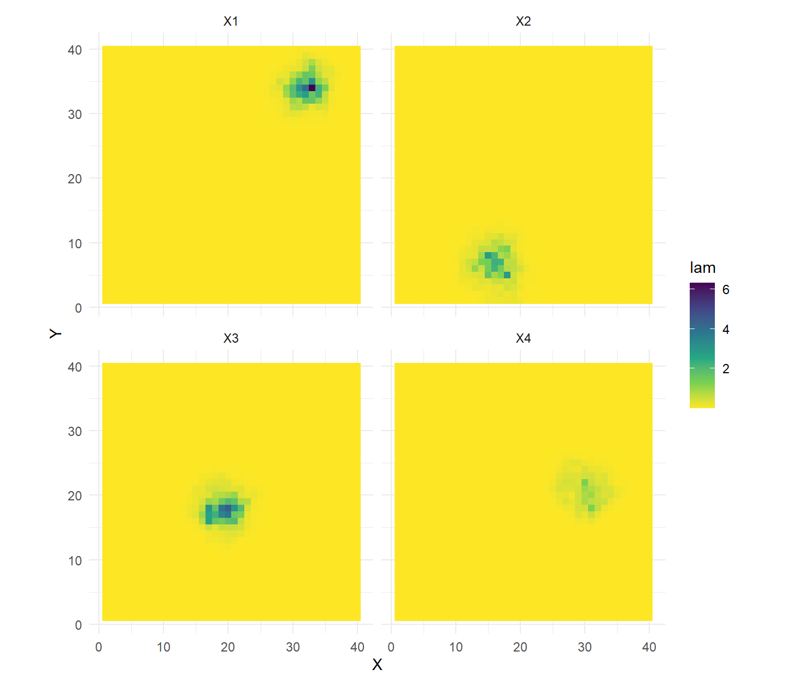
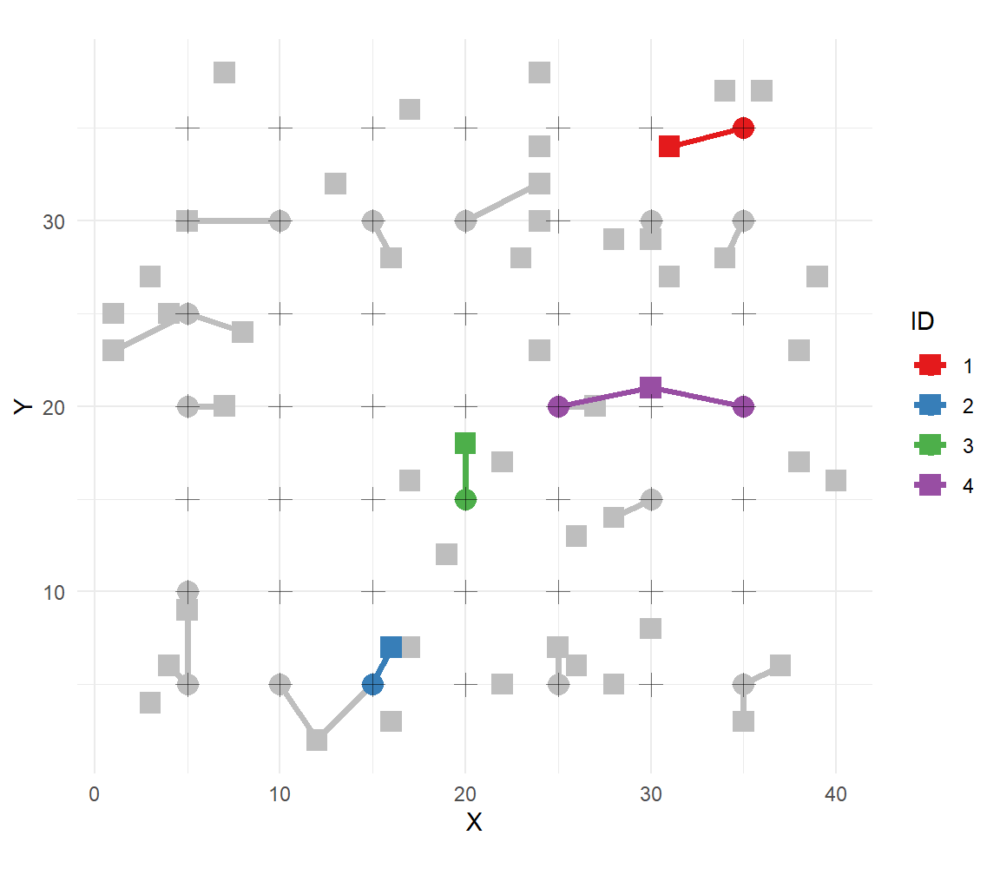
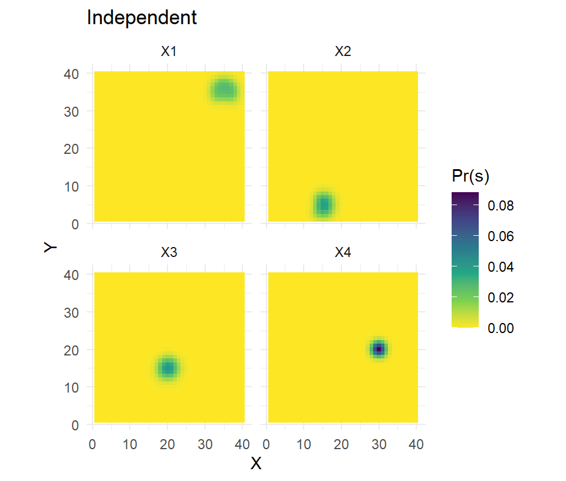
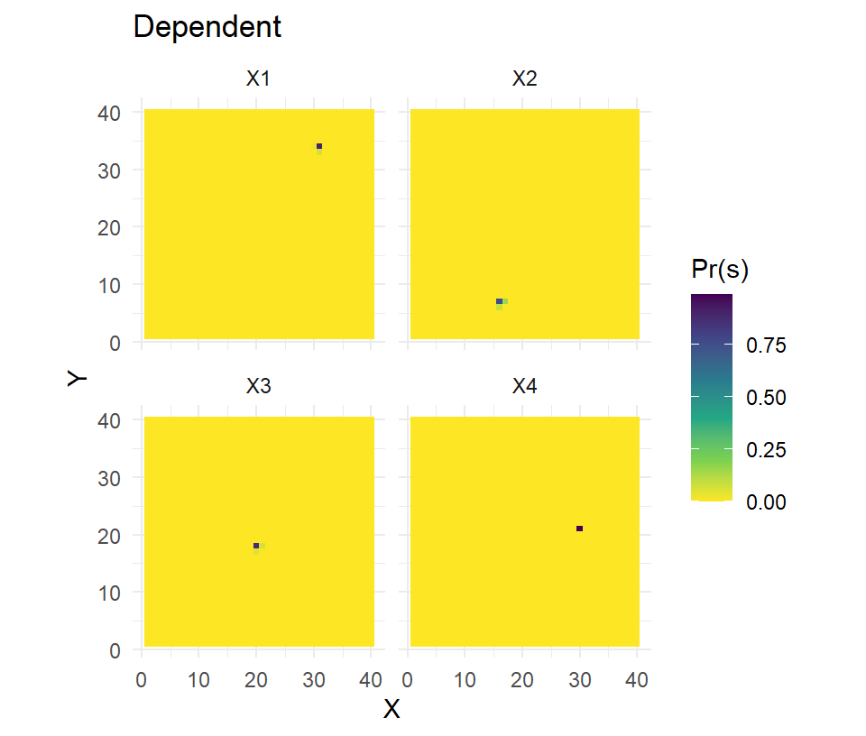

Vignette 1 Integrated RSF-SCR models in oSCR
Dan Linden
Statistical power in a spatial capture-recapture (SCR) analysis is dictated by the collection of captures obtained, particularly the number individuals captured (\(n\)) and the number of spatial locations at which each individual was captured. This latter quantity (i.e., spatial recaptures) requires a balance in trap design and configuration to ensure that a representative sample of individuals is observed in multiple locations to provide information on space use and movement.
Collecting enough spatial recaptures to allow for relevant inferences from an SCR model can be a challenge. Applications of SCR involving rare and/or wide-ranging species often result in sparse encounters and problems with fitting even simple models. Complex space use requires a large and diverse sample of spatial recaptures across the landscape that can rarely be achieved with most sampling designs. In either case, the integration of telemetry data from a subset of individuals in the population of interest may allow for better estimation of the relevant space use and movement parameters.
Here, we illustrate the approach described by Royle et al. (2013) as implemented in oSCR. We simulate a small data set and fit some SCR models that vary with regards to telemetry integration. Importantly, we distinguish the inferences made by models that assume independent or dependent samples (i.e., collared animals being captured) as described in Linden, Sirén, and Pekins (2018). We then fit a model to the New York bear data from Royle et al. (2013).
1.1 Simulating capture & telemetry data
We mostly replicate the supplementary R script from Royle et al. (2013) with a few tweaks to simulate some encounter data from a trap array and a collection of telemetry fixes from 4 collared individuals. Aside from some small details, the big change is that the collared individuals were also captured during the trapping survey.
First, we simulate a state-space with a spatially-correlated landscape covariate:
# drink the tidyverse Kool-aid for superior data visualization
library(tidyverse)
## the following block of code makes up a covariate as a spatially correlated noise field
## with an exponential spatial correlation function
set.seed(1234)
gr <- expand.grid(X = 1:40, Y = 1:40)
Dmat <- as.matrix(dist(gr))
V <- exp(-Dmat / 5)
# below change to matrix multiplication
z <- as.vector(crossprod(t(chol(V)), rnorm(1600)))
# create the state-space dataframe and plot it
ssDF <- data.frame(gr,z=z)
ss.plot <- ggplot(ssDF,aes(x=X,y=Y)) + coord_equal() + theme_minimal()
ss.plot + geom_tile(aes(fill=z)) + scale_fill_viridis_c()
We set some values for sample sizes and model parameters:
alpha0 <- -1.5 # log(encounter rate)
sigma <- 2 # movement scale
alpha2 <- 1 # effect of covariate on resource selection
Ntel <- 4 # number of individuals with telemetry devices
Nfixes <- 40 # number of telemetry fixes per individual
N <- 50 # population sizeWe set up a \(7 \times 7\) trap array and identify the raster cells to which they correspond for obtaining the spatial covariate value:
X <- expand.grid(X=seq(5,35,5),Y=seq(5,35,5))
ntraps <- nrow(X)
raster.point <- rep(NA, nrow(X))
for (j in 1:nrow(X)) {
raster.point[j] <- (1:1600)[(X[j, 1] == gr[, 1]) &
(X[j, 2] == gr[, 2])]}Now we simulate the capture data. We set another seed here to make our example more compelling – a larger simulation would be needed to truly illustrate the superior performance of the integrated likelihood. The activity centers (\(\textbf{s}\)) of all \(N\) individuals in the population are randomly distributed across the landscape and the pixel id and coordinates are identified for each. The distance matrix between individual activity centers and trap locations is calculated (with help from e2dist) and used to determine the encounter rate for each individual \(i\) at trap \(j\). Finally, the hazard rate is converted to a probability and used to simulate binary capture data (\(y_{ij}\)).
set.seed(9933)
# Simulate activity centers of all N individuals in the population
Sid <- sample(1:1600,N,replace=TRUE)
# and coordinates
S <- gr[Sid,]
# Hazard model is used. This seems the most sensible.
D <- oSCR::e2dist(S,X) ## N by ntraps distances
Zmat <- matrix(z[raster.point],nrow=N,ncol=ntraps,byrow=TRUE) # note make dims the same
loglam <- alpha0 -(1/(2*sigma*sigma))*D*D + alpha2*Zmat
p <- 1-exp(-exp(loglam))
# Now simulate SCR data
K <- 3
y <-array(NA,dim=c(N,ntraps))
for(i in 1:N){ y[i,] <- rbinom(ntraps,K,p[i,]) }
# Subset data to captured individuals
cap <- apply(y,1,sum)>0
y <- y[cap,]We now move to the telemetry data, where 4 individuals are chosen to be collared. The individuals need to have “interior” activity centers so that their fix locations can be observed fully within the state space. In a real application, the state space would simply need to encompass all traps and fixes with an appropriate buffer.
So we identify some possible activity centers for telemetry individuals and, critically, they have to be individuals that were captured. The cap.tel vector identifies the rows in the capture history for \(N_{tel}\) individuals, which is needed by oSCR for fitting the dependent integrated models.
poss.tel<- S[,1]>5 & S[,1]<35 & S[,2]>5 & S[,2]<35
# Need to account for capture so that dependent models can be explored
tel.guys.id <- sort(sample(which(cap & poss.tel),Ntel))
tel.guys <- Sid[tel.guys.id] #which s for each Ntel
cap.tel <- match(tel.guys.id,which(cap)) #which row in capture history for each Ntel
sid <- tel.guys
stel <- gr[sid,]Instead of directly simulating the fix locations (XY coordinates) of the telemetry data, Royle et al. (2013) simulated the pixel frequencies. These frequencies are simply tallies of fixes within each pixel (x in \(1,2,...,nG\)) of the state space, with pixel-level probabilities, \(\pi(\textbf{x}|\textbf{s})\), determined by a multinomial model of resource selection:
\[ \pi(\textbf{x}|\textbf{s}) = \frac{\lambda(\textbf{x}|\textbf{s})}{\sum_{x}\lambda(\textbf{x}|\textbf{s})} \]
where, \[ \text{log}(\lambda(\textbf{x}|\textbf{s})) = \alpha_0 - \alpha_1d(\textbf{x},\textbf{s})^2 + \alpha_2\text{z}(\textbf{x})\]
The primary argument by Royle et al. (2013) is that this model of \(\lambda(\textbf{x}|\textbf{s})\) can be assumed equivalent between the capture and telemetry data (aside from the intercept, \(\alpha_0\)), allowing for a joint estimation of \(\alpha_1\) and \(\alpha_2\) from the likelihoods of each data set. Note that \(\alpha_1 = 1/2\sigma^2\).
So, we simulate fixes according to our specified model parameters and then double-check that the averages of the simulated fix locations match the selected activity centers.
# Make a matrix to store RSF data (telemetry fixes)
nfix<-matrix(NA,nrow=Ntel,ncol=1600)
# for each telemetered guy simulate a number of fixes.
# note that nfix = 0 for most of the landscape pixels
lammat<-matrix(NA,nrow=Ntel,ncol=1600)
for(i in 1:Ntel){
d<- Dmat[sid[i],]
lam<- exp(1 - (1/(2*sigma*sigma))*d*d + alpha2* z)
pi_i <- lam/sum(lam)
nfix[i,]<-rmultinom(1,Nfixes,pi_i)
lammat[i,]<-lam
}
# Average fix location (matches activity centers)
(sbar <- (nfix%*%as.matrix(gr))/as.vector(nfix%*%rep(1,nrow(gr))))## X Y
## [1,] 31.850 33.825
## [2,] 16.550 6.325
## [3,] 19.550 17.625
## [4,] 30.475 20.900## X Y
## 1351 31 34
## 256 16 7
## 700 20 18
## 830 30 21Finally, we can visualize the predicted space usage patterns and then plot the captures of the \(N_{tel}\) individuals.
# expected encounter rates (lambda) for collared guys
lamDF <- pivot_longer(
data.frame(gr,t(lammat)),-c(1:2),names_to="ind",values_to="lam")
# plot lambdas by collared individual
ss.plot + geom_tile(data=lamDF,aes(fill=lam)) +
scale_fill_viridis_c(direction = -1) + facet_wrap(~ind)
# collection of capture locations and s for each n
caps.X <- data.frame(which(apply(y,c(1,2),sum)>0,arr.ind=T))
caps.X[,c("X","Y")] <- X[caps.X$col,]; caps.X <- caps.X[order(caps.X$row),]
caps.X <- data.frame(caps.X,s=S[cap,][caps.X$row,])
caps.X$tel <- match(caps.X$row,cap.tel)
# plot the capture data, emphasis on collared guys
ss.plot +
# activity centers of all N, then Ntel
geom_point(data=S,pch=15,col="gray",size=4) +
geom_point(data=stel,aes(col=factor(1:4)),size=4,pch=15) +
# trap of captures for n, then Ntel
geom_point(data=caps.X,col="gray",size=4,pch=16) +
geom_segment(data=caps.X,aes(x=X,y=Y,xend=s.X,yend=s.Y),col="gray",lwd=1.25) +
geom_point(data=caps.X,aes(color=factor(tel)),size=4,pch=16) +
geom_segment(data=caps.X,aes(x=X,y=Y,xend=s.X,yend=s.Y,col=factor(tel)),lwd=1.25) +
# trap locations
geom_point(data=X,pch=3,size=3,alpha=0.55) +
scale_color_brewer(palette="Set1") + labs(color="ID")
The solid squares represent activity centers, crosses are trap locations, and circles are captures with segments indicating the individual. The 4 collared individuals are uniquely identified.
1.2 Model fitting in oSCR
We now prepare the data for fitting models in oSCR. Since we already have an \(i \times j\) matrix of encounters by individuals at traps, we do not need to use the data2oscr function to format the data. But, we do need the binary encounters to be distributed across occasions to use the complimentary log-log encounter model in oSCR (the likelihood code in Royle et al. (2013) was less general). In the absence of occasion-specific effects, we can randomly distribute each encounter to one of the \(k = 1, 2, 3\) occasions.
y.arr <- array(0,dim=c(dim(y)[1],ntraps,K))
for(i in 1:nrow(y)){
for(j in 1:ntraps){
which.K <- sample(1:K,y[i,j])
y.arr[i,j,which.K] <- 1
}}We load the oSCR package and define the RSF dataframe, which can simply match the state-space dataframe (or potentially be defined at a finer resolution).
The telemetry data are then packaged into a list that only requires one object, fixfreq, which contains the \(N_{tel} \times nG\) matrix of fix frequencies. Other optional objects in the list are cap.tel, a vector identifying the row of capture for each collared individual, and indCovs, a vector of individual attributes (e.g., sex). One thing to note is that if cap.tel is used, any collared individuals that were not captured need to be sorted to the end of the fixfreq matrix and indCovs vector (obviously they are simply absent from cap.tel). As always, each object must be packaged within a list to support multi-session functionality in oSCR.
The last data preparation step is to make the SCR dataframe for oSCR. This could be done automatically by data2oscr if we were working with a dataframe of encounters but here we manually created our \(y_{ijk}\) capture array. In either approach, the entry of telemetry and rsfDF objects signifies the presence of telemetry data and interest in an RSF surface for the SCR model. Importantly, adding an rsfDF object even without any telemetry data will prompt the generation of trap-specific covariates for each column of the rsfDF that indicates a potential landscape covariate.
# Create the scrFrame
sftel <- make.scrFrame(caphist = list(y.arr),
traps = list(X),
telemetry = telemetry,
rsfDF = list(rsfDF)
)Finally, we can fit some models. To integrate telemetry data, we need to set the option to either "ind" or "dep" (default is "none"), indicating whether our collared individuals are an independent or dependent sample. We’ll first compare results between a typical SCR model and one with telemetry integration that assumes independence.
fit1 <- oSCR.fit(scrFrame=sftel,ssDF=list(ssDF),DorN="D",encmod="CLOG",
#rsfDF=list(rsfDF),RSF=TRUE,
trimS=sftel$mdm,
model=list(D~1,p0~z,sigma~1,path~1))
fit2 <- oSCR.fit(scrFrame=sftel,ssDF=list(ssDF),DorN="D",encmod="CLOG",
rsfDF=list(rsfDF),RSF=TRUE,telemetry="ind",
trimS=sftel$mdm,
model=list(D~1,p0~z,sigma~1,path~1))data.frame(fit1=fit1$outStats,fit2=fit2$outStats[,2:3],
truth = c(alpha0,log(sigma),alpha2,log(N/1600)))## fit1.parameters fit1.mle fit1.std.er fit2.mle fit2.std.er truth
## 1 p0.(Intercept) -2.005576 0.4521090 -1.5074864 0.33108019 -1.5000000
## 2 sig.(Intercept) 0.889889 0.1648810 0.6483914 0.03608053 0.6931472
## 3 t.beta.z 1.287438 0.3229795 1.0670170 0.13865802 1.0000000
## 4 d0.(Intercept) -3.576972 0.2858384 -3.4862682 0.28572999 -3.4657359The parameter estimates of the integrated model are all closer to the data-generating values and the standard errors are much lower, at least for the parameters relating to the encounter model.
We can then fit an integrated model that admits dependence between the samples, since our collared individuals were also captured.
fit3 <- oSCR.fit(scrFrame=sftel,ssDF=list(ssDF),DorN="D",encmod="CLOG",
rsfDF=list(rsfDF),RSF=TRUE,telemetry="dep",
trimS=sftel$mdm,
model=list(D~1,p0~z,sigma~1,path~1))The parameter estimates (not shown here) are largely the same but this model is more appropriate because our inferences on space use came from a sample of 21 individuals, not 25 (21 captured + 4 collared). The other benefit of this model is that the activity center estimates for the 4 collared individuals are going to be far more accurate and precise. We can illustrate the difference by calculating and mapping the posterior distributions of s for the \(N_{tel}\) individuals.
# telemetry = independent
pred2 <- predict.oSCR(fit2)
pred.s2 <- pivot_longer(
data.frame(gr,t(pred2$preds[[1]][cap.tel,])),-c(1:2),names_to="ind",values_to="Pr(s)")
# plot Pr(s) by collared individual
ss.plot + geom_tile(data=pred.s2,aes(fill=`Pr(s)`)) +
scale_fill_viridis_c(direction = -1) + facet_wrap(~ind) + labs(title="Independent")
# telemetry = dependent
pred3 <- predict.oSCR(fit3)
pred.s3 <- pivot_longer(
data.frame(gr,t(pred3$preds[[1]][cap.tel,])),-c(1:2),names_to="ind",values_to="Pr(s)")
# plot Pr(s) by collared individual
ss.plot + geom_tile(data=pred.s3,aes(fill=`Pr(s)`)) +
scale_fill_viridis_c(direction = -1) + facet_wrap(~ind) + labs(title="Dependent")
The increased accuracy and precision in estimating the latent activity centers should improve other parameter estimates, most notably if the point process model is inhomogeneous and variation in density is being explored.
1.3 Application to NY black bears
The application in Royle et al. (2013) comes from a study on black bears in New York (Sun 2014). The data object (nybears) can be loaded and used to replicate their analysis. In this case, we will use data2oscr to create our SCR dataframe. Also, the telemetry data are raw fix locations that require some manipulation for use in the integrated model.
First, the data are loaded and the UTM coordinates are rescaled so that 1 distance unit = 10 km.
## [1] "edf" "elevation" "K" "ss" "tdf" "teldata"
## [7] "traplocs" "y2d"# capture data
edf <- nybears$edf
K <- nybears$K
# rescale spatial coordinates so each unit = 10km
tdf <- nybears$tdf
tdf[,2:3] <- tdf[,2:3]/1e4
colnames(tdf)[2:3] <- c("X","Y")
ntraps <- nrow(tdf)
ss <- nybears$ss/1e4
colnames(ss) <- c("X","Y")
# telemetry data
fixes <- nybears$teldata[,c("animalid","X_UTM","Y_UTM")]
colnames(fixes)<- c("ind","X","Y")
fixes[,c("X","Y")] <- fixes[,c("X","Y")]/1e4
# create the state space and RSF surfaces with elevation covariate
ssDF <- rsfDF <- data.frame(ss,z=nybears$elevation)An important consideration now is that the telemetry data are from GPS collars with an hourly fix rate. The RSF model assumes independent observations of space use and short time intervals between observations should lead to serial autocorrelation that violates assumptions about independence. Royle et al. (2013) spend their penultimate paragraph discussing this issue and argue it is less of a problem than it might seem. A comprehensive solution would be to model the correlation (e.g., Johnson et al. (2008)). A potentially sufficient solution, one used by Royle et al. (2013), is to thin the telemetry fixes.
The next step is to take these telemetry fixes and convert them into the \(N_{tel} \times nG\) matrix of fix frequencies. This is achieved by the telemetry.processor function, which requires dataframes of the RSF and fixes (input as session-specific lists) and creates several objects including the nfreq that is needed here. Note we include a vector of indicators for sex to the indCovs object just for illustration (the values are random and we do not fix any sex-specific models).
# create the individual by pixel frequencies of fixes
nfix <- telemetry.processor(list(rsfDF),list(fixes.thin))$nfreq
# create the telemetry object for oSCR (note, nfix already a list)
telemetry <- list(fixfreq=nfix, indCovs=list(data.frame(sex=c(0,1,0))))Finally, we package the data with the data2oscr function in order to create our SCR dataframe and fit the model. Because there were no collared animals captured, we fit the independent version.
# create the scrFrame from data2oscr
oSCR.dat <- data2oscr(edf = edf,
sess.col = 1,
id.col = 2,
occ.col = 3,
trap.col = 4,
sex.col = 5,
tdf = list(tdf),
K = K,
ntraps = ntraps,
rsfDF = list(rsfDF),
telemetry = telemetry
)
sftel <- oSCR.dat$scrFrame
# fit the model "SCR+RSF" from Royle et al. 2013
fit <- oSCR.fit(scrFrame=sftel,ssDF=list(ssDF),DorN="D",encmod="CLOG",
rsfDF=list(rsfDF),RSF=TRUE,telemetry="ind",
trimS=sftel$mdm,
model=list(D~1,p0~z,sigma~1,path~1))## Model: D ~ 1 p0 ~ z sigma ~ 1 path ~ 1
## Run time: 28.06683 minutes
## AIC: 2746.351
##
## Summary table:
## Estimate SE z P(>|z|)
## p0.(Intercept) -3.100 0.273 -11.341 0.000
## t.beta.z -0.263 0.120 -2.184 0.029
## sig.(Intercept) -0.812 0.036 -22.255 0.000
## d0.(Intercept) -3.968 0.243 -16.343 0.000
## psi.constant -0.305 0.352 -0.867 0.386
## *Density intercept is log(individuals per pixel)
## Nhat(state-space) = exp(d0.)*nrow(ssDF)
## (caution is warranted when model contains density covariates)The estimates largely match those of model “SCR+RSF” in Table 1 in Royle et al. (2013), with small differences due to a slightly modified state-space (note the SEs are identical). All other model versions in Table 1 could be fit here by changing whether the telemetry integration occurs or which model components use elevation as a covariate (e.g., D~z). The code used here can be accessed as an oSCR help file with ?telemetry.
1.4 Summary
Here we have illustrated how to use oSCR to integrate telemetry data with spatial captures into a joint SCR model following the approach of Royle et al. (2013). The resulting effort can improve parameter estimation and potentially facilitate sparse data situations and/or variation in resource selection that cannot be addressed with the capture data alone.
References
Johnson, Devin S, Dana L Thomas, Jay M Ver Hoef, and Aaron Christ. 2008. “A General Framework for the Analysis of Animal Resource Selection from Telemetry Data.” Biometrics 64 (3): 968–76.
Linden, Daniel W, Alexej PK Sirén, and Peter J Pekins. 2018. “Integrating Telemetry Data into Spatial Capture–Recapture Modifies Inferences on Multi-Scale Resource Selection.” Ecosphere 9 (4): e02203.
Royle, J Andrew, Richard B Chandler, Catherine C Sun, and Angela K Fuller. 2013. “Integrating Resource Selection Information with Spatial Capture–Recapture.” Methods in Ecology and Evolution 4 (6): 520–30.
Sun, Catherine. 2014. “Estimating Black Bear Population Density in the Southern Black Bear Range of New York with a Non-Invasive, Genetic, Spatial Capture-Recapture Study.” Master’s Thesis. Ithaca, New York, USA: Cornell University.